Battle HUD & menus — polish pass, before / after
2026-08-02. Shot with tools/ui_shots.mjs off tools/ui_mock.html
— the real modules, the real rules data, a posed party — at 1920×1080.
Battle plates are over the 3D arena (the tool asserts it booted; the flat
DOM stage is the no-WebGL fallback and is not what the player sees).
The arena itself was being rebuilt in a parallel lane while these were taken:
read them for the chrome, not for the stage.
Every pair below has a TV-distance copy. A 55″ screen at ten feet
subtends about what a 13″ laptop does at arm's length, so each plate is also
written downscaled to 560px. That small pair is the real verdict: on the
before side of it, the only things that survived were the damage number
and the gold readout.
Battle — waiting on a command
The message band was a 1900px window carrying a 14.5px sentence at one end and
the key hints at the other. It now leads with whose turn it is — hero or
monster — at a size you can read from a sofa, and the command window titles
itself with the same character instead of the word “Command”.
Maren at 14/38 used to look exactly like Vesper at 33/52; she is now orange
against gold.
before
after
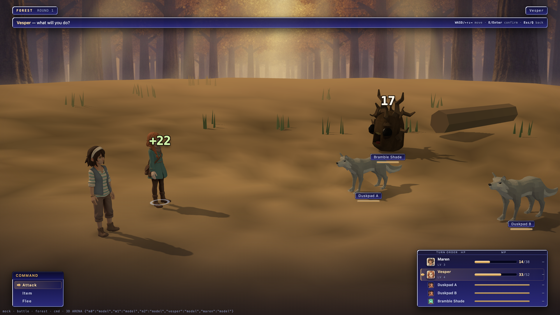
before · TV distance
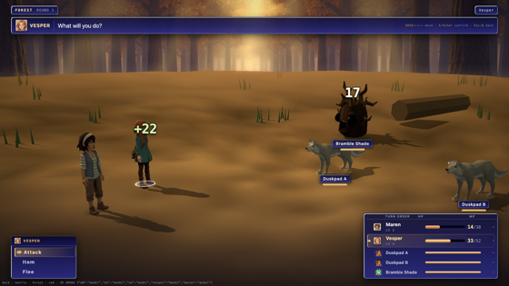
after · TV distance
Battle — choosing a target
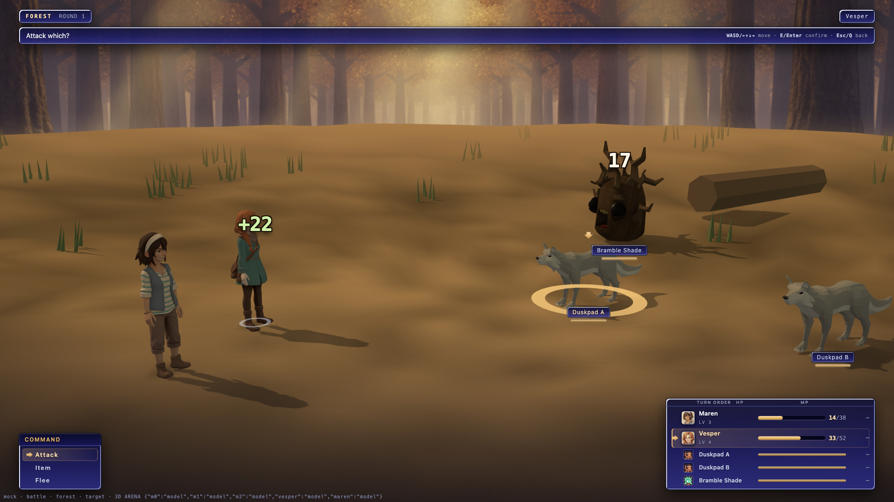
before
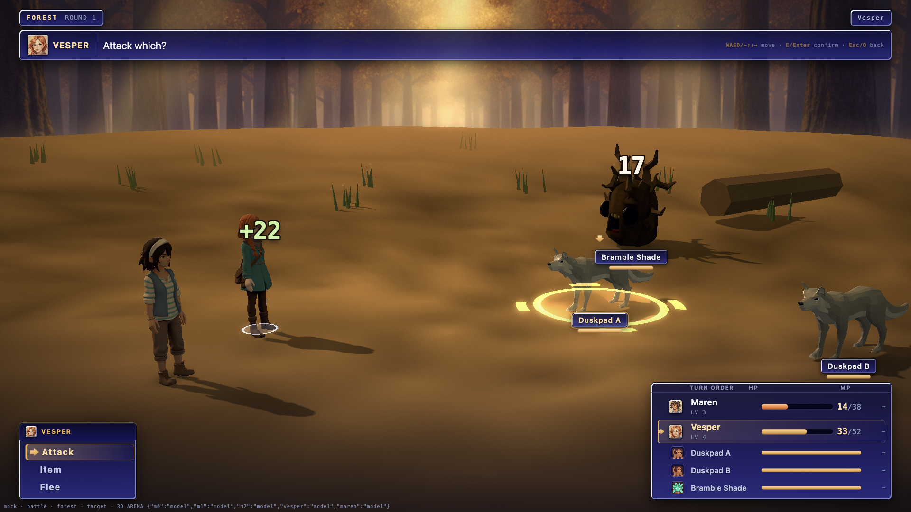
after
Battle — the item list
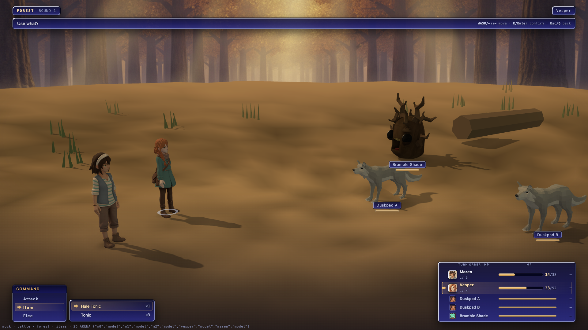
before
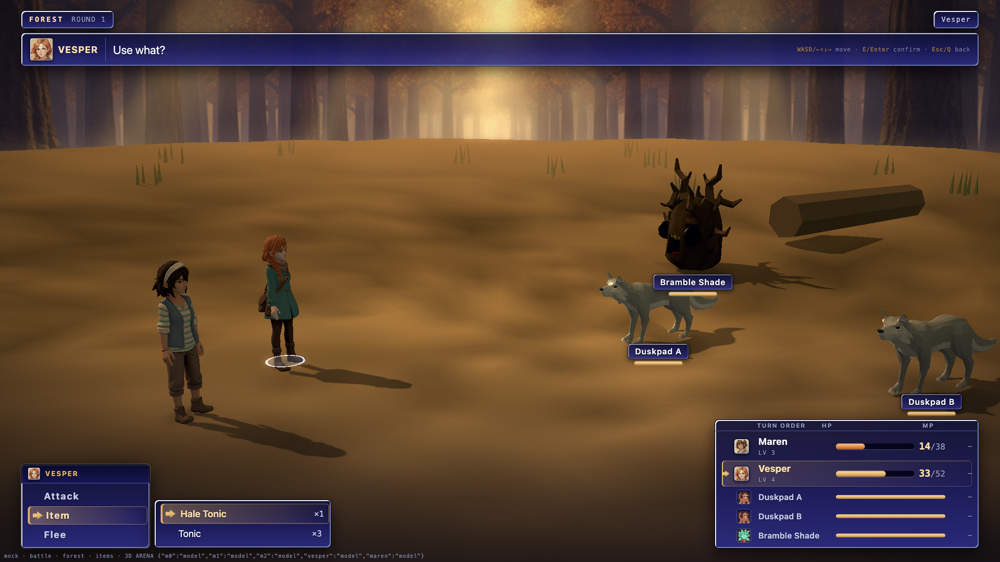
after
Battle — victory
Experience and gold were the first two of four identical 13.5px rows. They are
now two counting-up amber readouts, the headline is set at the top of the type
ramp, and the empty message band no longer sits across the top of the arena.
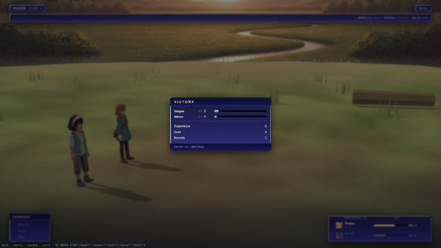
before · TV distance
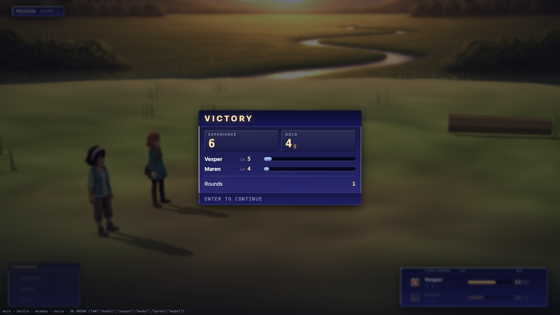
after · TV distance
Pause menu — root
The plate's min-height floor was painting 160px of flat blue over a
scene the overlay exists to let you keep looking at. Sized to content, the town
shows around it.
before
after
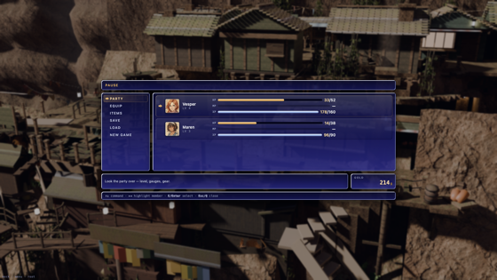
before · TV distance
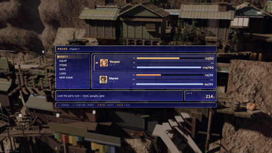
after · TV distance
Pause menu — equip
IF EQUIPPED is the only question this screen exists to answer, and it was
the smallest palest thing on it.
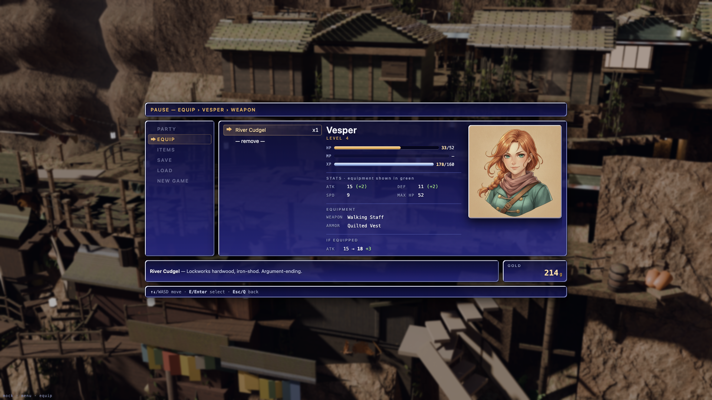
before
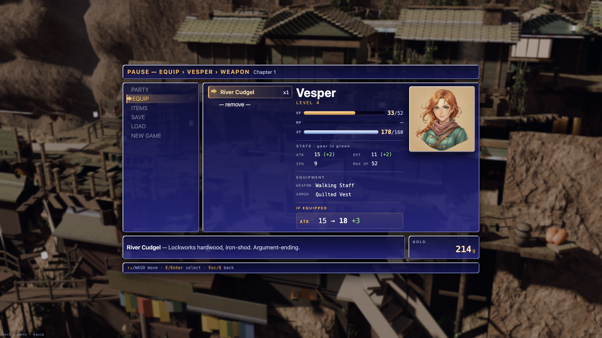
after
Pause menu — party & items
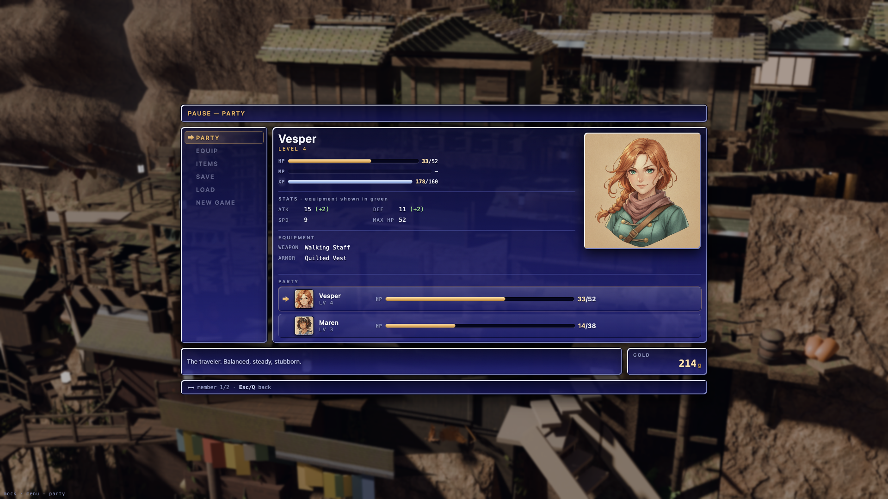
before · party
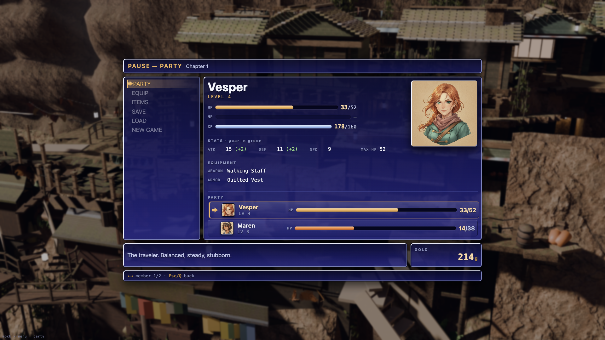
after · party
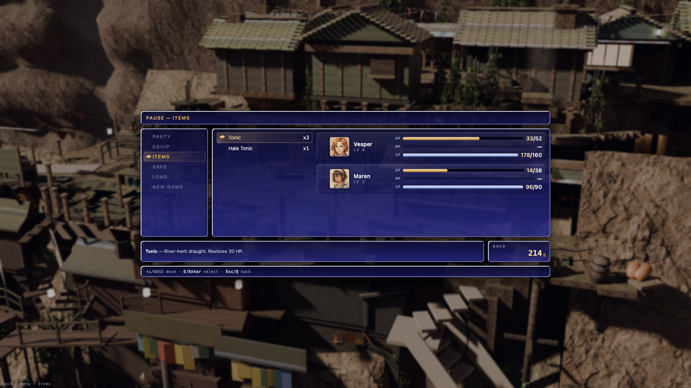
before · items
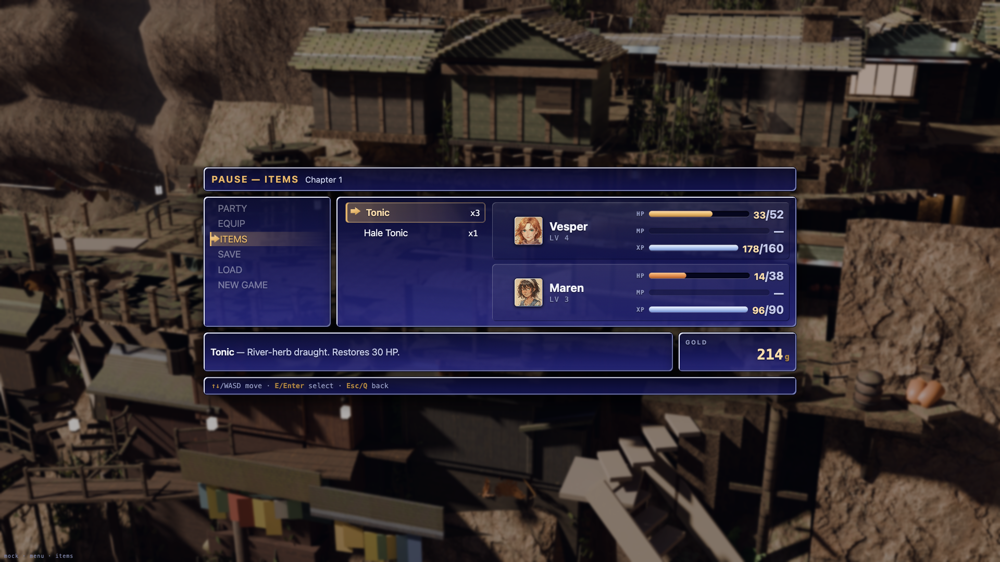
after · items
Shop
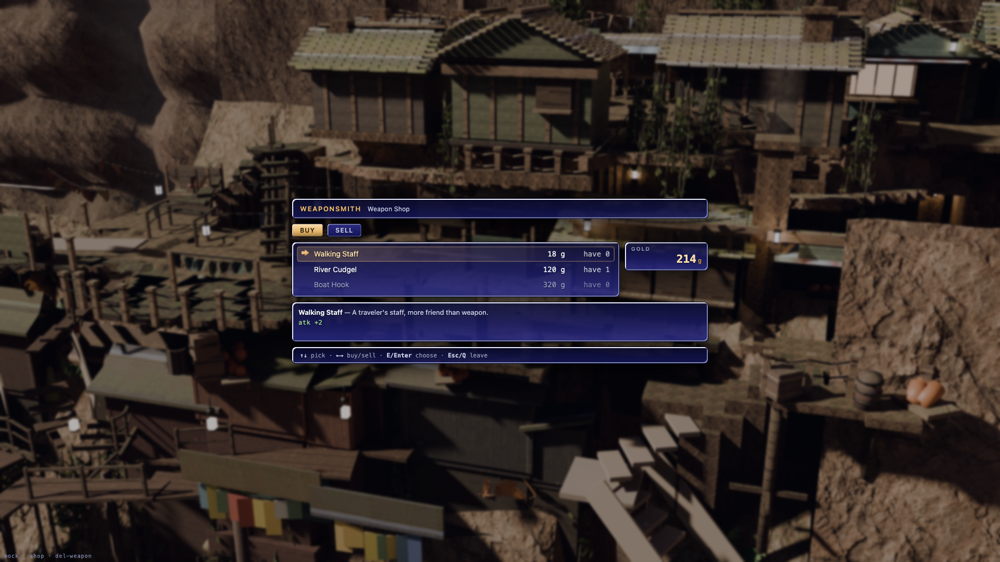
before
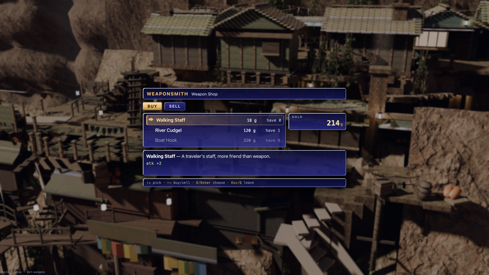
after
before · quantity step
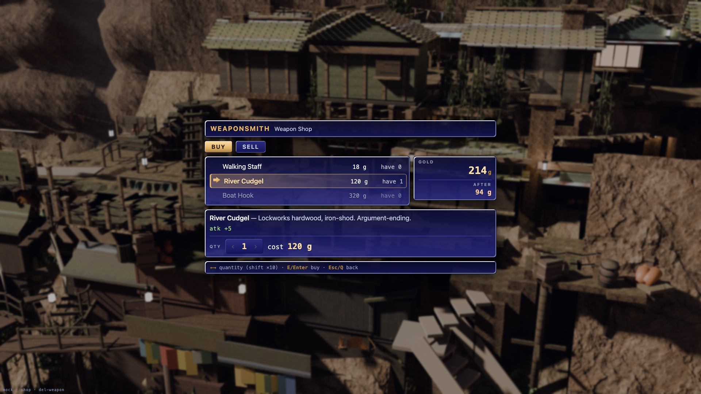
after · quantity step
Motion — the pause menu arriving
Played at 1/20 speed. A CDP screenshot costs 200-300ms on a 1920px page, which is
longer than the transition itself; the capture stretches the duration
tokens and leaves the curve alone. Measured on the page's own rAF
(tools/ui_motion_probe.mjs): opacity 0.000 → 0.370 → 0.796
→ 0.930 → 0.976 → 0.995 → 1.000, translateY 16 → 12.3
→ 6.4 → 3.5 → 1.9 → 1.0 → 0 px.
Motion — the chase bar
Vesper is dropped to 12% HP through the shipped syncHp. The gauge
turns red, the numeral tweens down rather than snapping, and a red
sliver hangs behind the fill showing exactly what the blow cost before draining
away. One extra element and one delayed transition; every gauge in the game gets
it for free.